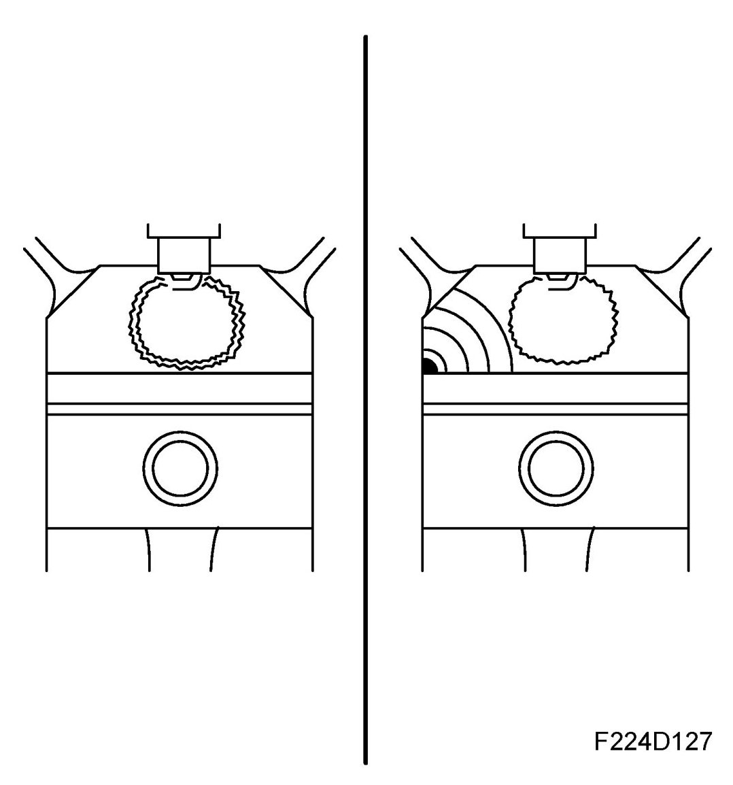
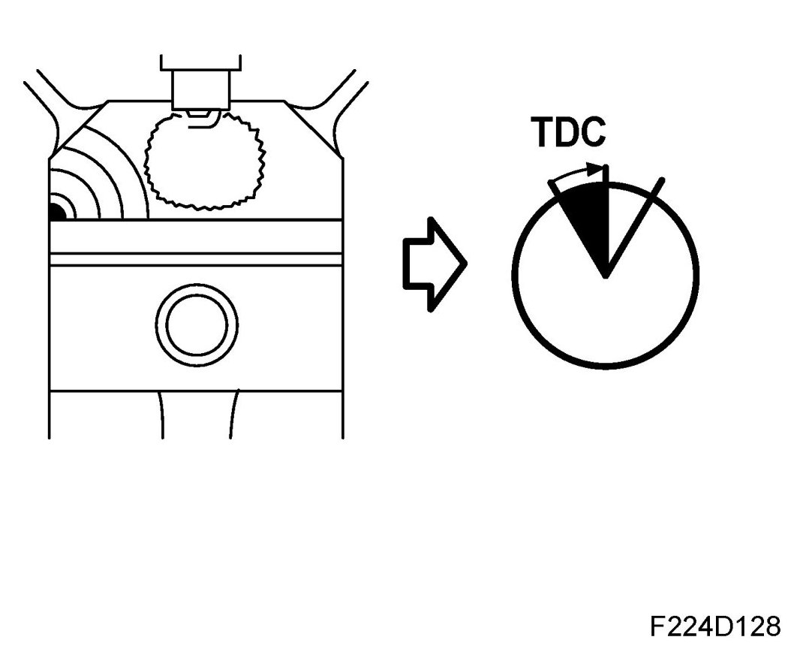

Knock Control
Knock Control
Knocking, general

Combustion in an Otto engine can be beneficial (normal combustion) or destructive (knocking).
During normal combustion, the air/fuel mixture is ignited by the spark form a spark plug. The flame expands in the combustion chamber originating from the centrally located spark plug.
Normal combustion takes place in a controlled fashion at a speed in the range 20-40 m/s, depending on the prevailing operating conditions.
The pressure in the cylinder now rises in a controlled manner as the combustion proceeds and maximum pressure will be attained at approx. 16-17 degrees ATDC. Occasionally, the pressure and temperature in the cylinder are so high that the unburned air/fuel mixture can self-ignite, either before or after the spark has ignited. This self-ignition usually takes place at very high speed and therefore releases large amounts of energy into the cylinder in a very short time.
This gives rise to shock waves that can move faster than the speed of light. Uncontrolled knocking can damage the engine through not only fusion on pistons and cylinder head but also fatigue damage caused by shock waves in pistons and bearings. Controlled knocking that can be handled by the engine management system must be differentiated from uncontrolled knocking that can arise if the engine is driven on inferior fuel at high temperatures and high altitudes, etc.
A high compression ratio is advantageous to engine efficiency and consequently fuel consumption.
The tendency an engine has to knock, however, increases with compression ratio so the compression ratio for a specific engine is chosen with regard to the engine's tendency to knock and the fuel's tendency to knock.
Knock control in modern engines is not a safety function but a standard function. Consequently, it is normal for knock control to be active during normal driving. At times in certain operating conditions, the engine can be heard knocking. This is controlled knocking that can be considered normal.
Knock control
By analyzing the knock signal, the ECM will be able to identify the knocking cylinder and in that case how much.

If the level of knocking exceeds a specific value, ECM will retard the ignition for the cylinder in question until the knocking ceases.
The ignition timing correction will subsequently return to zero, its original setting. If the average value for the retardation on all cylinders exceeds a specific value then the mixture will be enriched.
If despite of this the average value of the timing retardation rises even more, there will be a limitation of the maximum permitted engine torque, air mass per combustion.